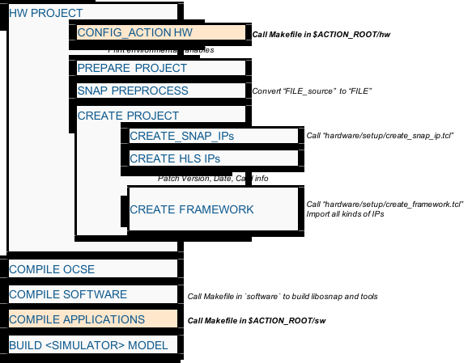

A new git fork
The first step before creating a new action is to create a git "fork".

Now play on the forked git repository:
git clone https://github.com/<MY_NAME>/oc-accel
git submodule init
git submodule update
Delete the unnecessary branches, only keep "master", and create your own branches.
When you want to sync with the original repository, do following steps:
git remote add upstream https://github.com/ORIGINAL_OWNER/ORIGINAL_REPOSITORY.git
Check status:
git remote -v
# origin https://github.com/MY_NAME/MY_FORK.git (fetch)
# origin https://github.com/MY_NAME/MY_FORK.git (push)
# upstream https://github.com/ORIGINAL_OWNER/ORIGINAL_REPOSITORY.git (fetch)
# upstream https://github.com/ORIGINAL_OWNER/ORIGINAL_REPOSITORY.git (push)
Do the sync:
git fetch upstream
git merge upstream/master
When you have some fixes and added some new features, create a pull request from your fork to the original repository. It will be reviewed and then the contribution will be merged.
Note
OC-Accel encourages people to create their own actions and the links will be recommended on README.md. But to keep the repository relatively small and neat, it will not copy every user action design into its original actions folder.
Submit an issue or pull request to start the discussion.
A new action
We have several examples as references. Current action example list is:
| Name | Type | Description |
|---|---|---|
| hdl_example | VHDL | 512b hdl_example inherited from SNAP1/2. Optional FPGA DDR. |
| hdl_single_engine | Verilog | 1024b example to send AXI read/write commands. Used to measure bandwidth and latency. No FPGA DDR. |
| hls_helloworld | C/C++(HLS) | 512b example to read data from host, convert to CAPITAL case and write back. No FPGA DDR. |
| hls_memcopy_1024 | C/C++(HLS) | 1024b example to do memcopy. Enabled FPGA DDR. |
According to the action category, copy the folder of a proper example from actions and name it.
Give it a name and type
Step1:
make snap_config
Select HLS Action - manually set ... or HDL Action - manually set ... in the blue kconfig window.

Step2:
Edit snap_env.sh, point $ACTION_ROOT to the new action.
export ACTION_ROOT=<...path...>/oc-accel/actions/my_new_action
export TIMING_LABLIMIT="-200"
export OCSE_ROOT=<...path...>/ocse
Step3:
Edit software/tools/snap_actions.h, add a row of the new action, with the company/person name, action type ID, and a short description.
static const struct actions_tab snap_actions[] = {
{ "IBM", 0x10140000, "hdl_example in VHDL (512b)" },
{ "IBM", 0x10140002, "hdl_single_engine in Verilog (1024b)" },
{ "IBM", 0x10140004, "UVM test for unit verification (no OCSE and software)" },
{ "IBM", 0x10141001, "HLS Sponge (512b)" },
{ "IBM", 0x10141008, "HLS Hello World (512b)" },
{ "IBM", 0x1014100B, "HLS Memcopy 1024 (1024b)" },
};
Step4:
The Action Type (for example, 0x10140000) should match with following places:
actions/<my_new_action>/hw/actions/<my_new_action>/sw/
Do a grep search and replace them.
Understand the workflow
Modify the example code (sw, hw and tests) to cook a new action.
Understanding the workflow can help quickly identifying what's wrong. These steps are organized in
Makefilehardware/Makefilesoftware/Makefile- Actions -->
$ACTION_ROOT/hw/Makefile$ACTION_ROOT/sw/Makefile
When adding a new action, before calling the "All-in-one" ocaccel_workflow.py, make sure the make process under $ACTION_ROOT works.
cd $ACTION_ROOT/sw
make
cd $ACTION_ROOT/hw
make

Above figure shows the steps to make a simulation model. The Action related steps are marked in light orange color. There are also two important tricks:
- PREPROCESS: it will deal with the files with "_source" suffix. That means, "FILE_source" will be "pre-processed" and converted to "FILE". "FILE" is a generated one and should not be modified manually, and should not be committed to github either.
- Build Date/Time, Git Version and Card info will be hardcoded into snap_core logic by "patch_version.sh"
Start simulation
After clean up compiling errors in action sw and action hw, kick off a co-simulation by
./ocaccel_workflow.py